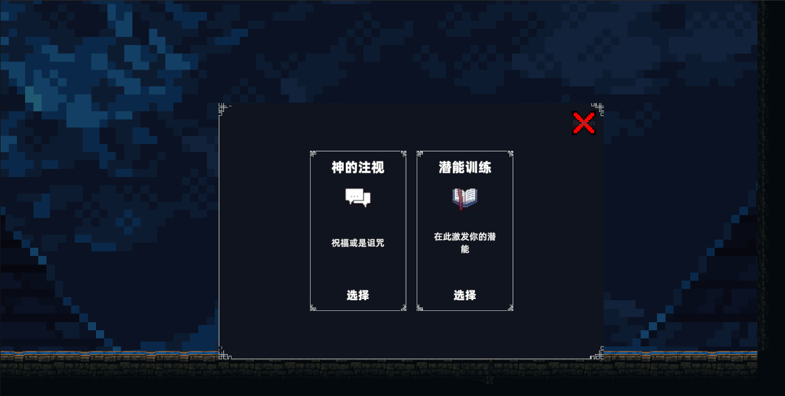
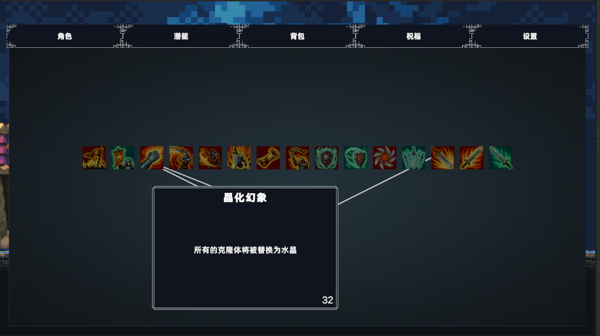
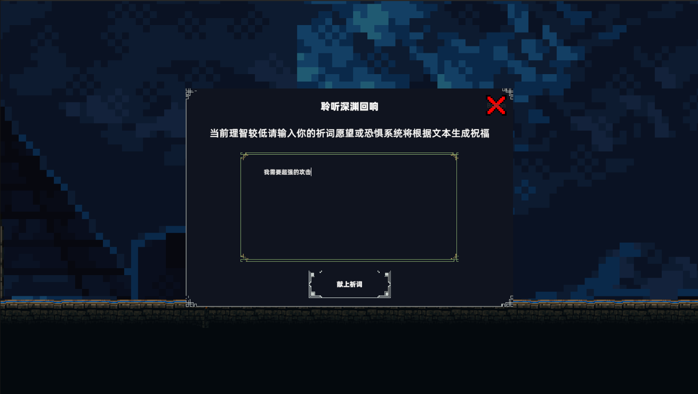

目标
让房间选择、实时战斗、奖励与构筑互相推进，形成可以重复运行的一局游戏。
CASE BRIEF
这里展示的是已经运行的原型事实，不把尚未公开的 Demo、平台支持或发布状态写成完成项。
让房间选择、实时战斗、奖励与构筑互相推进，形成可以重复运行的一局游戏。
单人独立开发；本地模型输出必须结构化并可失败回退；存档需要维持 Run 连续性。
用统一能力入口协调技能与潜能；用房间快照保存局内状态；把生成式祝福接入既有能力结构。
战斗、房间分支、潜能树、祝福请求和调试工具均有真实运行画面或页面说明。
尚无公开 Demo 和完整性能数据；内容量、平台适配与模型成本仍处于原型验证阶段。
补充 30–60 秒玩法视频、模型失败回退与性能成本，并整理可公开版本。
THE RUN LOOP
不是单一战斗演示，而是让探索、战斗、奖励和成长彼此推进的完整游戏原型。
在战斗、潜能、祝福等房间分支之间做出路线选择。
用移动、冲刺、招架与技能组合应对敌人与房间节奏。
潜能改变技能分支，祝福与装备继续塑造本局打法。
房间快照维持 Run 的连续性，支持中断后继续探索。
PLAYABLE SYSTEMS
真实运行截图记录了玩家在一局游戏中会直接接触的关键系统。

每次房间选择都会改变接下来面对的风险、奖励与能力成长。

潜能通过分支与标签重塑既有技能，而非只增加固定数值。

本地模型根据理智状态与祈词返回结构化祝福，再接入游戏能力系统。
ENGINEERING THE EXPERIENCE
项目以玩家、房间和战斗为中心，把通用工程能力收束到一条可运行、可调试、可继续扩展的玩法链路中。
技能授予、触发、冷却与潜能联动由统一能力入口协调，减少玩法逻辑散落。
存档编辑、GAS 监控、Roguelike 调试与概率模拟工具帮助快速构造和复现测试场景。
RESEARCH → FRAMEWORK → GAME
设计记录保存问题与判断，Sakura Framework 沉淀可复用能力；《言铸之剑》则检验这些能力能否支撑一条真正可玩的完整循环。